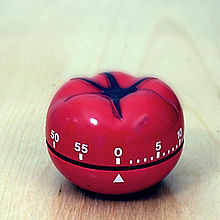

Você sabe gerenciar o seu tempo?
4 dicas para vôce administrar melhor o seu tempo.
1º Mantenha o ambiente de trabalho organizado
Organização é o primeiro passo para uma boa gestão do tempo. Você não precisa ser a pessoa mais organizada do mundo, porém,
é necessário que seja o suficiente para não perder tempo “no meio da sua bagunça”.
Tente criar uma lógica de organização.
2º Liste suas tarefas e atividades
Uma vez que você organizou o macro, você deve partir para o micro, identificando todas as suas atividades, rotineiras ou não.
Feita a listagem de atividades, você deve organizá-las conforme prioridade e importância,
defina uma rotina de execução ou fluxo de tarefas diário ou semanal,
e o mais importante: tente manter sua execução
3º Diferencie o que é urgente do que é importante
Você já ouviu a frase “O que é importante é raramente urgente, e o que é urgente é raramente importante” ?
Organizar as tarefas diferenciando-as entre importante e urgente é algo muito utilizado e eficaz mundialmente. A definição mais conhecida e aplicada foi criada pelo Dr. Stephen R. Covey, em seu livro “Os 7 Hábitos das Pessoas Altamente Eficazes”. Ele define as duas como:
Importante: São tarefas que exigem planejamento e mais tempo para exucação, devem ser pensadas com antecedecência.
Urgente: Algo que exige atenção imediata, motivado por prazos.
A partir dessa definição, Covey desenvolveu a matriz urgente-importante, para melhorar a organização de tarefas.
4º Tente manter uma rotina.
Uma rotina te ajuda a manter a execução das tarefas dentro do planejado. É importante reservar o tempo necessário para atividades rotineiras, assim, você não atrasa nenhum prazo e não esquece nenhuma atividade importante.
Tenha um cronograma de atividades para a semana e para o dia, assim você poderá se organizar sempre que uma demanda surgir.
-----postagem 18/09-----
METODO PDCA
o que é pdca?
O PDCA é uma metodologia de melhora contínua nos processos de gestão da empresa baseada em quatro etapas:
Plan, Do, Check, Action. De maneira geral,
o objetivo de se adotar esse método é promover melhorias em processos e produtos em um fluxo sem intervalos ou interrupções.
O conceito também pode ser encontrado por aí como Ciclo de Shewhart – que agregou seus conhecimentos em um método em 1930 –, ou Ciclo de Deming –
que tornou o processo de fato popular a partir dos anos 1950.
As 4 etapas: Plan, Do, Check, Action
Como não poderia deixar de ser, o Ciclo PDCA se inicia com o planejamento (Plan). O primeiro objetivo é encontrar uma estratégia de ação em etapas. Depois, é hora de executar (Do). Tendo em mãos o que foi planejado, é hora de coloca-lo em ação e partir ao passo seguinte. Depois, é hora de verificar (Check) se foi possível alcançar as metas pretendidas. Por fim, o método se encaminha para a Ação (Action), que é agir ativamente para superar os problemas encontrados durante o processo.
Confira os processos citados acima em detalhes:
Plan – Planejamento
Na primeira etapa do ciclo, estabelece-se o plano tendo em mente quais são as diretrizes da empresa. Esta é a hora de saber quais são os objetivos, metas e prazos para se atacar definitivamente os gargalos de gestão. Isso garante a pretendida continuidade típica ao PDCA a partir de um Plano de Ação.
É este o momento de determinar caminhos e métodos que serão seguidos durante o PDCA: quem vai ser envolvido no cumprimento das metas?; quais ferramentas serão usadas?; quais mudanças são esperadas nos processos?; a partir de quais indicadores os resultados serão aferidos? É também nesta etapa do processo que se deve identificar problemas relativos ao planejamento e encontrar soluções para que isso não interfira nas demais etapas.
Do – Execução
A segunda etapa do plano é basicamente colocar a mão na massa. Agora é o momento de se colocar em prática tudo que foi estabelecido no prazo anterior, seguindo rigorosamente à risca as etapas estipuladas e, assim, tirar o projeto do papel para a execução. Somente assim será possível contar com os indicadores fundamentais ao próximo passo do ciclo.
Check – Checagem
Após o planejamento e a execução, é chegada a hora de conferir tudo que foi feito. Este é o momento de comparar o que foi pretendido com os objetivos alcançados, validando a utilidade do processo e, assim, compreendendo as mudanças atingidas por ele.
Agora é também a hora de analisar profundamente os indicadores coletados. Os dados devem ser estudados com o objetivo de visualizar pontos positivos e negativos a fim de se ter uma visão holística dos processos da empresa.
Act – Ação
Pode ser que os termos “Do” e “Act”, “Fazer” e “Agir” em português, causem confusão na cabeça do gestor. Por isso é importante diferenciá-los no ciclo PDCA: “do” relaciona-se a colocar o plano em prática, enquanto “act” é o processo de correções de falhas encontradas no próprio ciclo, a partir de processos ativos.
Nesta etapa, deve-se identificar qualquer distorção que tenha afastado o processo do cumprimento da meta pretendida com ele. Deve-se apontar causas para esses desvios e, assim, encontrar soluções metodológicas ou práticas na hora de refazer o ciclo. É comum encontrar duas principais respostas neste momento:
O ciclo funcionou: Os gargalos foram amenizados com os processos estabelecidos e podemos seguir este fluxo. As práticas devem ser adotadas na cultura da empresa;
O ciclo não atendeu aos objetivos: É preciso retomar o PDCA a partir da etapa de Planejamento, refazendo os processos e reiniciando as etapas.
-----postagem 25/09-----
Técnica de Pomodoro
A Técnica Pomodoro é um método de gerenciamento de tempo desenvolvido por Francesco Cirillo no final dos anos 1980. A técnica consiste na utilização de um cronômetro para dividir o trabalho em períodos de 25 minutos, separados por breves intervalos. A técnica deriva seu nome da palavra italiana pomodoro (tomate), como referência ao popular cronômetro gastronômico na forma dessa fruta. O método é baseado na ideia de que pausas frequentes podem aumentar a agilidade mental.

1- Escolher e listar as tarefas a serem executadas;
2- Ajustar o cronômetro para o tempo desejado (geralmente 25 minutos);
3- Escolher a tarefa inicial;
4- Trabalhar na tarefa escolhida até que o alarme toque. Se alguma distração importante surgir, anotá-la e voltar o foco imediatamente de volta à tarefa;
5- Quando o alarme tocar, marcar um "x" na lista de tarefas;
6- Se houver menos de 4 marcações, fazer uma pausa curta (3-5 minutos);
7- Se houver quatro pomodoros marcado, fazer uma pausa mais longa (15-30 minutos), zerando a contagem de marcações e retornando ao passo 1.
As etapas de planejamento, controle de tempo, gravação de registros e visualização são fundamentais para a técnica.[carece de fontes]
Na fase de planejamento de tarefas, são priorizados os itens que devem ser feitos no dia. Isso permite que os usuários possam estimar as tarefas que exigem maior esforço. Como cada pomodoro refere-se a um período indivisível de 25 minutos, que deve ser registrado na lista, é possível fazer uma auto-observação de como o tempo é gasto.[carece de fontes]
Um objetivo essencial da técnica é reduzir o tempo das interrupções, adiando outras atividades que interrompam o pomodoro
-----postagem 02/10-----